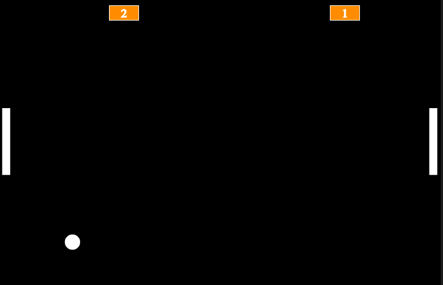
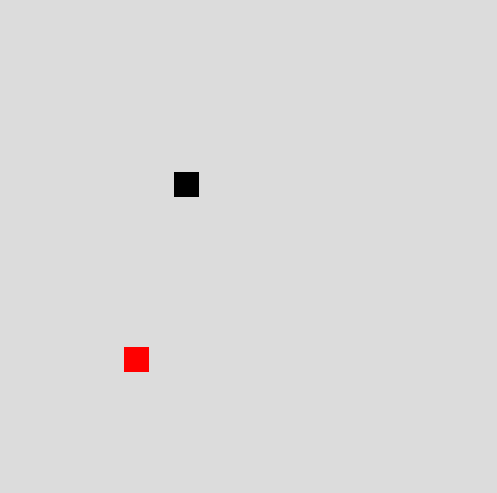
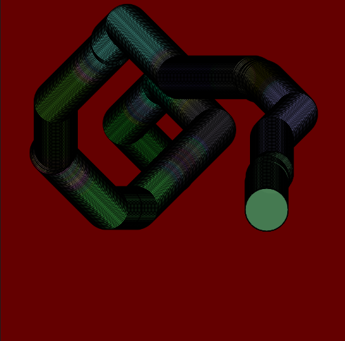

PONG
Um clássico jogo de ping-pong recriado com JavaScript e p5.js. Trabalhei lógica de colisão e movimentação para desenvolver este projeto divertido e nostálgico.
Ver Projeto

SNAKE
O famoso jogo da cobrinha! Neste projeto aprendi a trabalhar com arrays, lógica de crescimento e controle de direção, aplicando conceitos mais avançados em p5.js.
Ver Projeto

EFEITO DE CORES E MOVIMENTO
Uma experiência visual onde explorei formas, cores e movimentos dinâmicos usando p5.js. Aprendi sobre manipulação de canvas e criação de efeitos gráficos interativos.
Ver Projeto